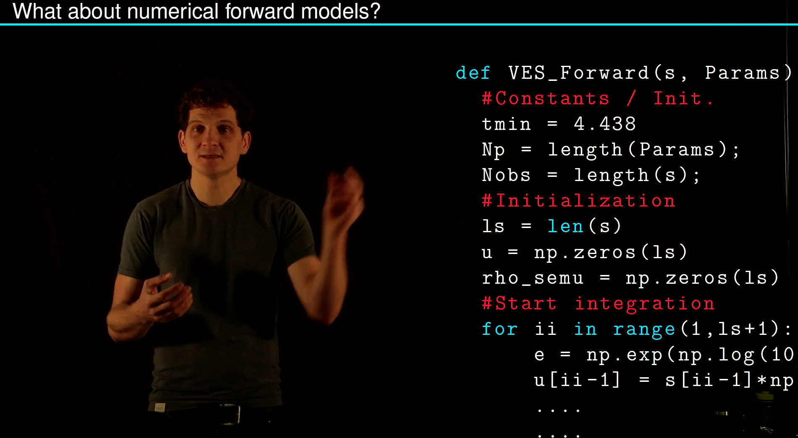
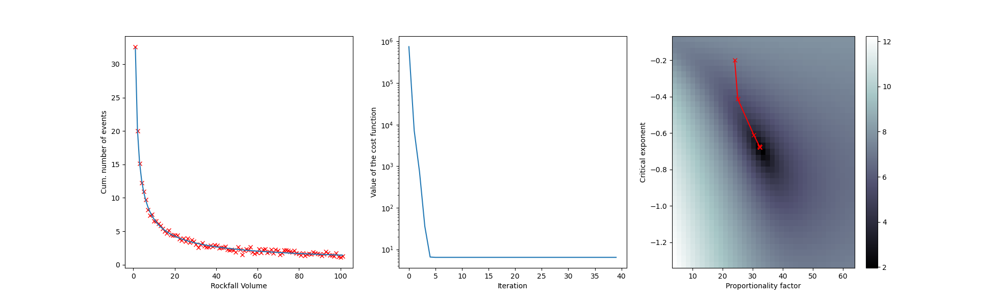

Non-linear least squares
Forward models g(m) are often non-linear so that no matrix representaion can be found. Then the loss function becomes:
\[LF(\mathbf{m}) = ||g(\mathbf{m}) - \mathbf{d}||^2 = \sum_{k=1}^{N_o}(g(\mathbf{m},x_k) - d_k)^2 \rightarrow \text{small}\]
and the minimization has to be done numerically using the Jacobi matrices. An iterative procedure using the Gauss-Newton Method is explained in this Video:
Example: Power Law Fitting
Fitting a power law to a frequency-magnitude dataset such as the one presented in Mohadjer et al. 2020 can be tricky. The model parameters:
\[f(x) = V_o x^k\]
are non-linear (at least the critical exponent k is). Here is an example how this can be solved:
{kind=link}
import numpy as np
import matplotlib.pylab as plt
Nobs=100
Np=2
A=31.9
omega = -0.67
time = (np.linspace(1,101,Nobs)).T
noise = np.random.normal(0,0.25,Nobs)
data = (A*time**omega + noise).T
nit = 10
J=np.zeros((Nobs,Np))
m=np.zeros((Np,))
m[0] = 5.1*A
m[1] = 0.25*omega
m_cor=np.zeros((Np,))
LF = [];m1=[];m0=[]
for it in np.arange(0,40):
J[:,0] = time**m[1]
J[:,1] = m[0]*np.log(time)*time**m[1]
r = data-m[0]*time**m[1]
LF.append(np.sum(r**2))
m_cor = np.matmul(np.matmul(np.linalg.inv(np.matmul(J.transpose(),J)),J.transpose()),r)
m = m + m_cor
m1.append(m[1])
m0.append(m[0])
print(m1)
print(f'Best guess is {m}')
print(f'Truth is {A} and {omega}')
##brute force
ntries = 40
Aguess = np.linspace(0.1*A,2*A,ntries)
Omega_guess = np.linspace(0.1*omega,2*omega,ntries)
RM = np.zeros((ntries,ntries))
for kk,At in enumerate(Aguess):
for ii,Ot in enumerate(Omega_guess):
RM[kk,ii]= np.sum((data-At*time**Ot)**2)
fig, (ax1,ax2,ax3) = plt.subplots(1,3)
ax1.plot(time,data,'rx')
ax1.set_xlabel('Rockfall Volume')
ax1.set_ylabel('Cum. number of events')
ax1.plot(time,m[0]*time**m[1])
ax2.plot(LF)
ax2.set_xlabel('Iteration')
ax2.set_ylabel('Value of the cost function')
ax2.set_yscale('log')
im = ax3.pcolormesh(Aguess,Omega_guess,np.log(RM),cmap='bone')
ax3.set_xlabel('Proportionality factor')
ax3.set_ylabel('Critical exponent')
#ax3.contourf(RM,20)
ax3.plot(m0,m1,'r-x')
fig.colorbar(im, ax=ax3)
plt.show()